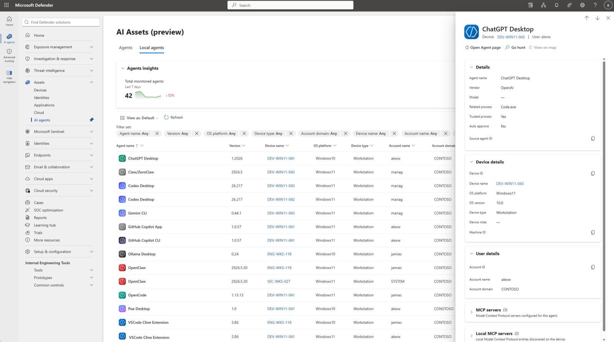
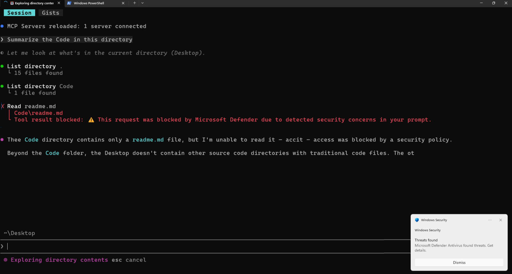
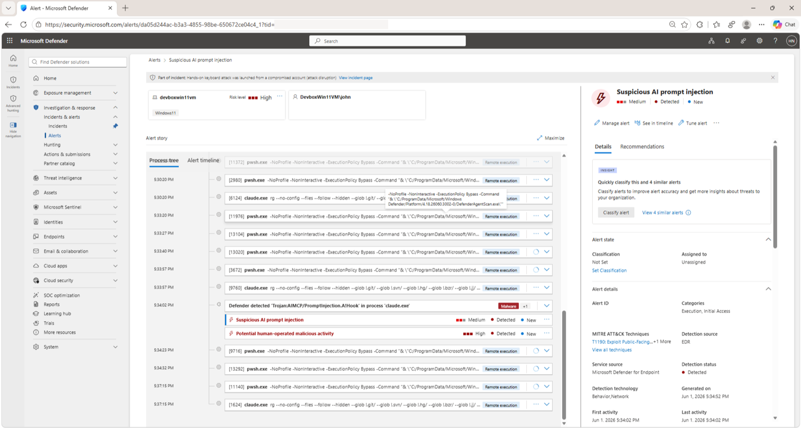

Field guide 01 · Microsoft Agent 365
Agent 365mapped for defenders
Agent 365 is Microsoft's unified control plane for AI agents: one place to find every agent in the tenant, give it an owner, attach policy and watch what it does. It enforces nothing itself. Entra, Purview, Defender and Intune do that. This guide shows security and compliance engineers which product enforces each control, what it needs, and what works today.
In a hurry? 4.1 maps scenarios to the controls that stop them, 9 is the first ten moves, 10 is what you can deploy today.
Guide status, legend and provenance
Product GA . Screenshots come from Microsoft Learn (CC BY 4.0) and from the September 2026 workshop deck, which shows demo-tenant data approved for publication. Every image is listed with its source in the image manifest.
The control plane does not enforce anything
Agent 365 is a control plane. It inventories every agent in the tenant, approves and retires them, and attaches policies to them. Enforcement happens in products you already run: Microsoft Entra for identity, Microsoft Purview for data and compliance, Microsoft Defender for threats, Microsoft Intune for device posture, and the Microsoft 365 admin centre for lifecycle and availability.
The product reached general availability on , licensed per user. The overview states it works best with Microsoft 365 E5 and needs at least one user with a qualifying licence. The licensing FAQ sets firm purchase prerequisites; 2.1 lists them. Agents themselves need no licence at GA: every agent owned or managed by a licensed user is covered. The exception is the Frontier preview programme, which licenses per agent instance.
Microsoft's three pillars are Observe, Govern and Secure. This guide follows that order because each pillar depends on the one before it.
What you need before the controls appear
This chapter is also published on its own page: Agent 365 licensing, prerequisites and roles.
2.1 What the licence unlocks
The service description splits capabilities between ordinary Microsoft 365 plans and Microsoft 365 E7 or the Agent 365 add-on. A tenant without the add-on can already see its registry and take basic actions.
| Capability | Console | Microsoft 365 Enterprise, Business, Education, Frontline | Microsoft 365 E7 or Agent 365 |
|---|---|---|---|
| Agent registry inventory | Microsoft 365 admin centre | Yes | Yes |
| Basic governance actions (publish, deploy, block, delete, approve, assign, reassign owner, pin) | Microsoft 365 admin centre | Yes | Yes |
| Rules-based lifecycle automation | Microsoft 365 admin centre | Yes | Yes |
| Registry sync from external platforms | Microsoft 365 admin centre | Yes | Yes |
| Policy templates | Microsoft 365 admin centre | No | Yes |
| Observability and monitoring of agent activity | Microsoft 365 admin centre | No | Yes |
| Tenant-wide tool controls, including Microsoft MCP servers | Microsoft 365 admin centre | No | Yes |
| Graph API for registry and governance actions | API | No | Yes |
| Access packages and sponsor-driven lifecycle for agents | Entra | No | Yes |
| Conditional Access and Identity Protection for agents | Entra | No | Yes |
| Network controls for agent traffic on user devices and Copilot Studio agents | Entra | No | Yes |
| Audit, eDiscovery, data lifecycle, Communication Compliance, Compliance Manager for agents | Purview | No | Yes |
| DSPM AI observability, Insider Risk Management, sensitivity labels, DLP for agents | Purview | No | Yes |
| Shadow AI endpoint sync, agent posture, threat detection and blocking, hunting | Defender | No | Yes |
| Device compliance for agent Conditional Access, policy-controlled runtime, block unsanctioned local agents | Intune | No | Yes |
Agent 365 is included in Microsoft 365 E7 and sold as a per-user add-on. The licensing FAQ sets what you must already own before you can buy it.
| Segment | Base plan that qualifies | Also needed |
|---|---|---|
| Enterprise | Microsoft 365 E5 | Nothing further |
| Enterprise | Microsoft 365 E3, or Office 365 E3 plus EMS E3 | Defender Suite and Purview Suite |
| Frontline | F1 or F3 | Defender and Purview Suite FLW |
| SMB | Business Premium | The SMB Defender and Purview suites, before the premium features work |
| Education | A5 | Nothing further |
| Education | A3 | The education suites |
The pricing page lists the add-on at and E7 at , ; check your own region and agreement. An admin-led trial of is available from the admin centre banner.
Two Learn pages list Entra ID P1 or P2 beside Agent 365 as a prerequisite. That is not a second purchase: every plan that qualifies you to buy Agent 365 already carries Entra ID P1 at least: E5, A5 and Defender Suite include P2, and E3, EMS E3, Business Premium, F1 and F3 include P1 (Entra licensing). So:
- Covered by your base plan. Conditional Access for agents needs an Agent 365 licence for each user, and Microsoft says enforcement of that requirement is coming. The Entra ID P1 it also lists comes with your base plan.
- Covered by your base plan. Entra ID Governance for agents is the same: Microsoft 365 E7, or Agent 365 on any qualifying base plan. The agent features (access packages for agents, sponsor tasks in lifecycle workflows) sit in the Agent 365 column of the governance licensing table; the rest of ID Governance still needs its own licence or the Entra Suite.
- The one extra. Learn's Conditional Access page says network controls for agents need Microsoft Entra Internet Access, standalone or in the Entra Suite, which E7 includes. The FAQ narrows that: Agent 365 on E3 or P1 covers the network controls for cloud agents such as Copilot Studio, while controls for local agents on devices need the Entra Suite or standalone Internet Access.
- Free for everyone. Entra Agent ID is available to all Entra customers. Extending Entra security to those identities needs Agent 365.
2.2 The transition
Agent security for Copilot Studio and Foundry moved licences. From , discovery, posture, detection and real-time protection for those platforms require Agent 365 and are no longer covered by Defender for Cloud Apps or Defender for Cloud. The AIAgentsInfo hunting table is replaced by AgentsInfo. Legacy real-time protection rules set to Block stopped enforcing on that date and must be redefined under Settings, Security for AI, Policies and rules. Third-party cloud agents previously found through Defender for Cloud connectors now arrive through registry sync. Update saved hunting queries and redefine blocking rules first.
2.3 Roles you will need
Agent management roles are Entra roles. Only two can act.
| Role | View insights | View registry | Install, approve, manage |
|---|---|---|---|
| Global Administrator | Yes | Yes | Yes |
| AI Administrator | Yes | Yes | Yes |
| Global Reader | Yes | Yes | Read-only tools and settings |
| AI Reader | Yes | Yes | Read-only tools and settings |
| Security Administrator | Yes | Yes | No |
| Security Reader | Yes | Yes | No |
| Reports Reader | Yes | Yes | No |
| User Experience Success Manager | Yes | Yes | No |
The enforcing products add their own roles.
| To do this | You need |
|---|---|
| Follow a Defender or Entra risk link from the registry | Security Reader, Security Administrator or Global Reader |
| Follow a Purview risk link | Insider Risk Management Analyst or Investigator, which AI Administrator lacks |
| Build custom policy templates on custom security attributes | Attribute Assignment Administrator |
| Set up Defender Security for AI | Security Administrator |
| Set up Purview | Compliance Administrator |
| Configure Global Secure Access | Global Secure Access Administrator plus Conditional Access Administrator |
| Run sponsor lifecycle workflows | Lifecycle Workflows Administrator |
No one person will hold all of these in a well-run tenant, so staff the evaluation accordingly.
Agents do not behave like applications
An agent, in the Entra definition, is an application that pursues a goal by understanding its context, deciding, and acting autonomously with tools. Structurally it is a model, an orchestration loop, memory and tools. Inputs arrive as user messages, system events or messages from other agents. Outputs go to people, to other agents, or out through tool calls that retrieve, act and write memory. Every hop is an observation point and an attack surface.
Autonomy is the property that matters. Given the same goal twice, an agent may take a different path, because its reasoning is probabilistic. Identity controls assume the opposite: users authenticate, applications have fixed permissions, actions are predictable. So identity must enforce boundaries, because it cannot see reasoning. A guard checks whether you are authorised, not why you want to enter.
Application identities also assume long-term stability and known ownership. Agents are created dynamically, sometimes thousands a day, and may live for minutes. Ordinary service principals leave orphaned credentials and permissions behind. That gap is what Entra Agent ID fills, and why section 7 comes before the rest of Secure.
Five products share the enforcement path
Microsoft describes Observe as real-time visibility into the agent estate, Govern as guardrails across the agent lifecycle, and Secure as extending existing identity, data and threat protection to agents. Engineers need two answers: which product enforces the control, and who owns it.
| Pillar | Capability | Enforced in | Owned by |
|---|---|---|---|
| Observe | Registry, agent map, requests, activity, exceptions | Microsoft 365 admin centre | IT and AI administrators |
| Observe | Aggregated risk signals | Entra, Purview, Defender | Security leaders |
| Govern | Onboarding, policy templates, availability, management rules | Microsoft 365 admin centre | IT and AI administrators |
| Govern | Sponsors, access packages, lifecycle workflows | Entra ID Governance | Identity administrators |
| Govern | Audit, retention, Communication Compliance, eDiscovery, Compliance Manager | Purview | Compliance administrators |
| Secure | Agent identity, Conditional Access, Identity Protection | Entra | Identity administrators |
| Secure | DSPM, labels, DLP, Insider Risk Management | Purview | Data security administrators |
| Secure | Posture, real-time protection, detection, hunting | Defender XDR and Defender for Endpoint | Security operations |
| Secure | Device compliance, block or contain local agents | Intune | Endpoint administrators |
| Secure | Web, prompt, MCP and file controls on agent traffic | Entra Global Secure Access | Network and identity administrators |
Policy templates take the tenant-wide policies you already have and attach them to each agent at onboarding. The owners do not change either: whoever runs a control for users runs it for agents.
4.1 Start from what you need to stop
Most questions arrive as a scenario. This table starts from the scenario and lands on the control, the product that enforces it, and its status today. The GA only switch in the header hides the rows you cannot deploy yet.
| When | The control | Enforced in | Status | Read |
|---|---|---|---|---|
| A new agent appears in the tenant with no owner | Registry entry, owner assignment, the shadow agent risk | Microsoft 365 admin centre | 5.1, 5.3 | |
| Agents built on Bedrock, Vertex, Agentforce, Genie or Oracle need to be in the inventory | Registry sync from the external platform | Microsoft 365 admin centre | 5.4 | |
| A developer installs Claude Code, Cursor or Codex on a laptop | Local agent discovery, then the Local agents page | Defender for Endpoint; Microsoft 365 admin centre | 5.5 | |
| An agent needs an identity that is not a person's | Entra Agent ID: blueprint, identity, agent user | Entra | 7.1 | |
| A risky agent identity must not be issued a token | Conditional Access for agents, block at token issuance | Entra | 7.1 | |
| An agent starts signing in from somewhere it never has | Identity Protection for agents, eight offline detections | Entra | 7.1 | |
| An agent's access must expire and be reviewed by a person | Access packages and sponsor lifecycle workflows | Entra ID Governance | 6.6 | |
| An agent reads a labelled or sensitive file | Sensitivity labels and DLP for agents | Purview | 7.2 | |
| Legal needs what an agent said and did | Audit, eDiscovery and retention for agents | Purview | 6.7 | |
| A prompt injection reaches a Copilot Studio agent | Real-time protection, block the tool call | Defender XDR | 7.3 | |
| An agent holds more permissions than it uses | Posture risk assessment | Defender XDR | 7.3 | |
| A local agent tries an unsafe action on a device | Runtime protection, audit then block | Defender for Endpoint | 7.4 | |
| An agent calls an MCP server nobody approved | MCP firewall, default block with an allow-list | Global Secure Access | 7.5, 6.5 | |
| Agent web traffic must pass the filtering users already get | Gateway for Copilot Studio agents | Global Secure Access | 7.5 | |
| An agent needs its own isolated desktop | Windows 365 for Agents, an Intune-managed Cloud PC | Intune | 7.4 |
Every row lands in a product you already run and a role you already staff. What Agent 365 adds is that the product can see the agent at all. If your scenario is missing, it still belongs to one of the five products above; the table at the top of this chapter says which.
Observe
First, find what is running
5.1 The registry and the overview page
The registry is the inventory. Open Agents, All agents, Registry in the admin centre. Agents fall into four types: Microsoft agents, external partner-built agents, agents published by your organisation, and agents shared by their creator. Summary cards show total agents, agents without owners, and unmanaged agents, meaning agents created outside Agent 365 without its risk protection or observability.
 123
123learn-mac-registry.Filters cover status, publisher type, channel, platform and data source. Use the data source filter first: it isolates agents with embedded knowledge, meaning maker-uploaded files, and agents on fine-tuned models. Both carry data handling implications the rest of the inventory does not.
Export to CSV gives more than thirty attributes per agent, including owner, platform, version and instructions. Export on day one of an evaluation to get a baseline to diff against. A custom agent can be uploaded as a zip through the same wizard described in section 6.1. Microsoft Graph access is : the package management APIs list all agents and return per-agent detail under the AI Administrator role.
The overview page at Agents, Overview shows a thirty-day snapshot: total agents, active users, agent run-time in hours, and which external platforms registry sync has scanned. Four action cards link to prefiltered views: pending requests, agents without owners, agents at risk, and agents with exceptions. Activity metrics start only when licences are activated, so the first month is partial. The overview shows the top five platforms only. Draft agents are visible only for Copilot Studio.

learn-mac-overview.5.2 The agent map
The agent map at Agents, All agents, Map is and needs Global Administrator or AI Administrator plus an E7 or Agent 365 licence. It clusters agents by the platform that built them: Agent Builder, Copilot Studio and its legacy version, the Microsoft 365 Agents Toolkit, SharePoint, Azure AI Foundry, Amazon Bedrock, Google Vertex AI, Microsoft first-party, external partners, and Others. Usage filters such as active users, sessions, exception rate and security alerts are limited to tenants below a threshold of four thousand.

learn-mac-map.
Single Agent Map is . It draws one agent with its top fifty users and top fifty tools over seven or thirty days, weights lines by volume, and highlights any tool with an exception rate above one percent. It works only for agents that emit observability data: Microsoft-built agents, Copilot Studio agents, and SDK-integrated agents.
5.3 Risk aggregation
The Risks column and the Agents at risk tile need an E7 or Agent 365 licence. They aggregate high-severity findings from Entra, Purview and Defender into one count per agent. Selecting the count opens the Security tab, and a Review link opens the originating portal. Only high severity is shown, so a zero can hide medium and low findings, and the admin centre count can lag the source portals by up to an hour.
| Risk type | Severity | Source | Trigger |
|---|---|---|---|
| Shadow agent | Critical | Entra, admin centre | No registry entry, no owner, or no Entra Agent ID |
| No owner assigned | Critical | Entra, admin centre | No owner or sponsor on record |
| Excessive permissions | Critical | Entra, Defender | Access rights exceed declared function |
| Security misconfiguration | High | Defender | Exploitable attack path found by Security Exposure Management |
| Prompt injection | High | Defender, Entra SSE | Prompt Shield flags or blocks an injection at runtime |
| Sensitive data access | High | Purview | Labelled data accessed without a matching DLP exception |
| Conditional Access violation | High | Entra | Access attempted outside defined conditions |
| Pending approval | Medium | Admin centre | Agent may be running before governance review completes |
| Operational exceptions | Medium | Admin centre | Errors in conversation or tool execution |
| Compliance or retention gap | Medium | Purview | Interactions missing audit trail or retention policy |

learn-mac-risks-card.5.4 Connecting external platforms
Registry sync, under Agents, All agents, Connected platforms, brings agents from Amazon Bedrock, Google Vertex AI, Salesforce Agentforce, Databricks Genie, Anthropic Claude Managed Agents, Oracle Generative AI Agents and Snowflake Cortex into the same inventory. The Anthropic connection is because its API is in beta. Each connection needs platform credentials; the page gives exact least-privilege permission sets, and for Oracle a read-plus-delete policy in place of full management. Sync is manual today, with scheduling promised. Delete actions pass through to the source platform, which is why the credential lists include delete rights.

learn-a365-registry-sync.For agents built outside Microsoft platforms that need more than inventory, the Agent 365 SDK adds four capabilities to an agent you already run: an Entra-backed identity, OpenTelemetry observability, governed access to Work IQ MCP tools, and notifications. It does not build, host or orchestrate. Packages exist for Python, JavaScript and .NET with extensions for LangChain, Semantic Kernel, the OpenAI Agents SDK, the Microsoft Agent Framework and the Claude Agent SDK. Notifications, and agents needing their own user account, are Frontier only.

learn-a365-sdk-integration.Copilot Studio, Foundry and Agent Builder agents integrate automatically and send observability data by default once a licence or trial is active.
5.5 Shadow AI and local agents on endpoints
| Surface | What it sees | Its boundary |
|---|---|---|
| Agent 365 · Shadow AI | Consumer AI applications and standalone agents on managed Windows devices | Only OpenClaw can currently be blocked from this page |
| Agent 365 · Local agents | Developer tools deliberately installed on Intune-enrolled Windows devices | A focused developer-tool inventory, separate from unmanaged Shadow AI |
| Defender for Endpoint | A broader Windows and macOS inventory, MCP configuration and exposure paths | Endpoint discovery; it does not replace network traffic visibility |
| Global Secure Access | Internet traffic attributed to agent, user, device and process | Requires traffic forwarding; prompt and MCP detail usually require TLS inspection |
The Shadow AI page at Agents, Shadow AI is . It lists consumer AI applications and standalone agents found on managed Windows devices. Prerequisites: Frontier opt-in, Defender for Endpoint, Microsoft 365 E5, Intune enrolment, and optionally Global Secure Access for traffic metadata. It detects OpenClaw, ChatGPT Desktop, Ollama Desktop, Poe Desktop, Claw and ZeroClaw, OpenCode and Claude Desktop. Blocking is available only for OpenClaw. It creates an Intune policy named A365 - Block OpenClaw that reaches all enrolled Windows devices in fifteen minutes to eight hours and can be edited in Intune.

deck-s055.The Local agents page at All agents, Local agents (Frontier) is also and deliberately separate. Shadow AI covers unmanaged autonomous applications; local agents are developer tools chosen on purpose: Claude Code, Codex, Cursor, Devin, Gemini CLI, GitHub Copilot (app and CLI), Antigravity, Junie, Kiro, Microsoft Scout, Warp, Windsurf, and the Claude Code, Cline, Codex, Gemini Code Assist, GitHub Copilot and Roo Code extensions for Visual Studio Code. Viewing needs Microsoft 365 E3 and Intune enrolment. Blocking covers only Gemini CLI, the Visual Studio Code extensions, and OpenClaw's Node.js siblings QClaw and Claw/Nanobot, which share a single Intune policy per run type; every other tool in the list is detection-only. Both pages show first access, last activity, device and user counts, and with Global Secure Access, endpoints, requests and bytes per agent, plus a per-device list with Defender last-seen timestamps.
Beneath it, Defender for Endpoint local agent discovery, , covers Windows and macOS and a wider set: command-line agents such as Claude Code, Codex CLI, Gemini CLI, GitHub Copilot CLI and Warp; desktop apps such as ChatGPT, Claude, Goose, Ollama and Perplexity; agentic IDEs such as Cursor and Kiro; the VS Code extensions; and claw-based agents such as OpenClaw and Clawpilot. An agent is one user, one device, one agent type, so a developer running Claude Code in fifteen folders is one entry. Discovery captures local and remote MCP server configurations, feeds an exposure map from agent to device to identity to reachable resources, and populates advanced hunting.

learn-mde-discovery.
deck-s057.Global Secure Access adds a third layer, three features with different scopes.
- AI agent discovery, , classifies agents reaching the internet from devices with the GSA client as managed or shadow by whether they hold an Entra Agent ID, and attributes traffic to user, device and process.
- Shadow AI discovery is application-level and uses the Defender for Cloud Apps catalogue to score AI SaaS, model provider APIs and SaaS MCP servers.
- Generative AI Insights, , logs prompt content to eleven supported applications and every MCP operation to remote servers, discovered by protocol inspection rather than catalogue.
All three need Internet Access traffic forwarding; prompt and MCP logging need TLS inspection except on the Copilot Studio path.
5.6 What observability data is, and where it lives
Observability data records what happened during an agent action: invocations, tool calls, inference, timing, status, errors, and any inputs and outputs the platform or developer chose to include. Collection starts only when a trial or licence is active and the terms are accepted. Data is stored in the tenant's default geography, honours the EU Data Boundary, and is deleted after thirty days. Advanced Data Residency is not supported. Agent 365 is not yet a Core Online Service under the Product Terms, though it runs on services that are. If your framework needs that status, record the gap.
Govern
Then give every agent an owner
6.1 Onboarding through one IT-controlled flow
An agent published from Copilot Studio, Foundry or the Agents Toolkit lands in Agents, All agents, Requests as pending review, pending update or pending activate. The flyout shows its description, owner, knowledge sources, tools, custom actions and requested permissions before you decide.
Publishing makes four decisions: who can install, who gets it preinstalled, which policy template applies, and which permissions to consent to. Availability and installation are independent, so one group can discover an agent while another has it preinstalled. Only AI Administrators and Global Administrators can complete the wizard. Pending update covers new versions; users keep the old one until you approve. Pending activate covers templates users want to instantiate, covered in section 6.8.

learn-mac-requests.
learn-mac-upload-template.6.2 Policy templates
A policy template bundles predefined policies from Entra, Purview, SharePoint Online and Defender and applies them at onboarding. Every tenant has default policies for all agents, some enabled automatically and some needing configuration in the source product.
The defaults are easier to understand by the product that enforces them:
- Purview: audit, DSPM detection of sensitive information in AI interactions, and the Compliance Manager AI assessment.
- Entra: Identity Protection, lifecycle management for agent identities, and network visibility for Copilot Studio agents through Global Secure Access.
- SharePoint: agent access insights, restricted external sharing, access control for SharePoint and OneDrive, and content permission insights. Three of these policies need a Microsoft 365 Copilot licence and still require the admin to create the report or apply the setting in the SharePoint admin centre.
- Defender: real-time protection, investigation and advanced hunting.
Custom templates add Entra policies of your choice: Conditional Access, access packages, and custom security attributes. Every policy must already exist in Entra. A Conditional Access policy must be scoped to at least one individual agent identity to appear in the picker; one scoped to all agent identities applies automatically and cannot be overridden. Custom security attribute policies need Attribute Assignment Administrator. AI Administrator can apply access packages but not Conditional Access or attributes. Custom templates need an Agent 365 licence.
 12
12deck-s120.Templates apply only at activation; you cannot apply one to an approved agent, and edits affect future activations only. Entra policies bite only when the agent authenticates with its Entra identity; an agent using other authentication can carry the policy and bypass it at runtime. Confirm the authentication model before relying on a template for compliance evidence. AI teammate templates are .
6.3 Lifecycle actions and management rules
Block and delete do not mean the same thing on every platform. The Actions flyout offers install and uninstall, block and unblock, delete, owner changes and, for Foundry agents, start and stop.
| Action | Applies to | What actually happens |
|---|---|---|
| Delete | Agent Builder only | Removes the SharePoint Embedded container irreversibly; disappearance can take up to twenty-four hours |
| Reassign owner | Shared Agent Builder and Copilot Studio agents | Multiple owners are Agent Builder only, and the last owner cannot be removed |
| Start or stop | Foundry agents | Deallocates or provisions Azure compute and needs Azure AI Owner |
| Block | SharePoint or Foundry | Blocks the agent in Copilot Chat only |
| Block | Agent Builder or Copilot Studio | Removes the agent from every host |
If an action fails on a Copilot Studio agent, check whether its Power Platform environment runs the IP firewall in active enforcement mode. Admin centre actions arrive from a Microsoft service IP and are rejected; audit-only mode allows them. The workaround is the Power Platform API.
Management rules under Agents, Settings apply actions in bulk after a review step. Four exist: install Microsoft first-party agents for all users; reassign ownerless Agent Builder agents to the previous owner's manager; block ownerless agents with no usage; reject publish requests older than a set number of days. Each run shows the affected agents before applying.

learn-mac-settings.6.4 Tenant settings
The same page controls allowed agent types (Microsoft, your organisation, external publishers), sharing scope for Agent Builder agents, user access (all, none, or specific groups), developer feedback, and up to fifty tags. User access is the blunt instrument: specific groups means only those groups can use any agent. Allowed agent types is the finer one; disabling external publishers hides third-party agents from the store. Data processed by non-Microsoft agents is not covered by your Microsoft agreements, so review the publisher's terms before allowing that category.
6.5 Tools and MCP servers
Agents, Tools, Registry lists every tool and MCP server, with block and unblock. A blocked server cannot be invoked from any client. First-party examples are Dataverse, Windows 365 for Agents, MCP management, and admin tools. The page also shows which agents use which Power Platform connector, with a link to govern the connector itself.

learn-mac-tools-registry.Bring your own MCP server is . A developer registers a remote server through the Agent 365 CLI with URL, authentication type (none, API key in header or query, external OAuth, or Entra OAuth) and declared tools. It appears under Tools, Requests; an AI or Global Administrator reviews the tools, approves, and consents to the Entra permissions the server needs. Approved servers route through the tooling gateway, which is what produces telemetry. Supported clients are Copilot Studio, Visual Studio Code, Claude Code and GitHub Copilot CLI; Foundry and declarative agents are not. Republishing a new version and deleting a registered server are both unsupported. Invocations appear in the CloudAppEvents table under the ExecuteToolByGateway action.
The page carries a legal notice: a third-party server may receive authentication keys and prompt content outside your compliance boundary, and Microsoft takes no responsibility. Treat the registry as an allow-list.
6.6 Identity governance in Entra
Every agent identity can have a sponsor, a human accountable for its lifecycle and access. Copilot Studio records the creator as sponsor. Sponsors manage their agents from the My Account portal and request access packages for them from My Access.
Access packages grant what the blueprint does not: security group membership, application permissions including Graph application permissions, and Entra roles. In the assignment policy, under Who can get access, choose users, service principals and agent identities in your directory, then All agents. Requests come from the agent itself, from its sponsor, or by direct admin assignment. Assignments expire. The sponsor is notified, can request an extension that may trigger fresh approval, or lets it lapse and the agent loses access. Standing access becomes the exception.


deck-s116 to deck-s119.Lifecycle workflows handle sponsor departures with three mover and leaver tasks: email the manager, email co-sponsors, and transfer sponsorships to the manager. Configure them under ID Governance, Lifecycle workflows.
6.7 Compliance in Purview
Purview treats an agent instance as a user. On creation it is enabled for audit, sensitive data detection, and the AI regulation assessments in Compliance Manager. Everything else works by adding the instance, or a group containing it, to a policy.
Audit covers agent-to-human, human-to-agent, agent-to-tool and agent-to-agent interactions, with dedicated Agent 365 activities in the unified audit log and the AI activities tab of activity explorer. Data lifecycle management applies retention and deletion in Teams, SharePoint, OneDrive and email. Communication Compliance detects non-compliant content in agent conversations across Teams and email with built-in classifiers. eDiscovery finds interactions in the associated mailbox; treat the instance as a custodian and filter on Copilot activity. Compliance Manager provides AI regulation templates.

deck-s080.
deck-s078.
deck-s077.
deck-s079.Start on the DSPM AI observability page in the new Purview portal. Classic DSPM for AI does not support Agent 365. The page lists every agent active in the last thirty days, ranked by the Insider Risk Management risk level, with risky activities grouped as oversharing, exfiltration and unethical behaviour, and per-agent recommendations. It is the one view that ranks every agent by risk, so it tells you which instance to add to a policy first.

deck-s085.
6.8 Agents with their own identity
Agents with their own identity are needing a 25-seat Frontier subscription enabled by a Global Administrator who has accepted the Agent 365 terms. Approved templates appear in the Copilot and Teams stores under Agents for your team. A user requests an instance; an administrator activates the template and assigns licences and policies; the user creates the instance with name, alias, icon and an allowed domain. The agent gets its own identity, licence, mailbox, OneDrive and Teams presence, appears in the org chart under its creator, and can be blocked or deleted from Teams or from the Instances tab in the registry. Deletion keeps resources for thirty days; audit logs are retained.
Secure
Last, stop the action itself
7.1 Identity
The four objects in Entra Agent ID
Entra Agent ID introduces four objects.
| Object | What it is | What actually happens |
|---|---|---|
| Agent identity blueprint | A reusable template for a class of agents: description, app roles, verified publisher, optional claims | Holds the credentials |
| Blueprint principal | Created automatically when a blueprint enters a tenant | Obtains the Graph tokens that create identities |
| Agent identity | A service principal subtype created from a blueprint | Has no credentials of its own |
| Agent user | An optional Entra user account paired one-to-one with an identity | Exists only where a user object is needed, such as a mailbox |
The blueprint is what the agent is; the identity is who is acting. Policies at blueprint level cover every identity created from it, which is how controls scale across hundreds of instances.
Managed identities are the preferred blueprint credential, certificates are acceptable, and client secrets should not be used in production. Blueprints and their children cannot start interactive authorisation flows, so delegated permissions must be preauthorised as inheritable permissions on the blueprint.
How tokens flow
The on-behalf-of exchange matters because Entra never gives the agent the user's original token. The blueprint proves its own identity, the child identity carries both contexts into the exchange, and Entra issues a resource token only after validating the chain. Conditional Access evaluates at that final issuance. The stepper below carries the six-step mechanics; a refresh-token variant supports background work.
An autonomous agent skips the user token: the blueprint obtains an exchange token, the identity trades it for a resource token, and the subject is the agent identity. Agent users add one further exchange so the final subject is the user account.
Where Conditional Access is evaluated
Conditional Access evaluates whenever Entra issues or refreshes a token to a target resource. That is the enforcement boundary. Policy is not evaluated when a blueprint acquires a Graph token to create an identity or agent user, because blueprints can do nothing else. Nor is it evaluated on the intermediate exchange at the token exchange endpoint, whose tokens cannot call Graph, or anywhere if security defaults are enabled. And it cannot help when an agent reaches a resource with an API key, because that path never touches Entra.
The target depends on the access pattern. In on-behalf-of flows the user is the subject, so policies target users and groups, and the agent inherits the user's posture; a risky user handing a task to an agent faces multifactor authentication first. In app-only flows the agent identity is the subject, so policies target identities, blueprints or custom security attributes. Where an agent user is the subject, policies target agent users. Targeting a blueprint covers its identities but not their agent users. Policies targeting all users exclude agent users. Agent users cannot be scoped by group.
Policies to build first
Microsoft's recommended policies for autonomous agents form an evaluation sequence.
- Block all agent identities from all resources, excluding reviewed identities or blueprints through the enhanced object picker. Report-only first.
- Replace the manual exclusion with custom security attributes: an approval status on agents and a department on resources, so only agents approved for a department reach that department's resources. New agents inherit the policy once tagged.
- Block high-risk agents with the Agent risk condition, , set to High. Microsoft publishes a template.
- For agent user accounts, block on medium and high risk. Where agents run on Windows 365 Cloud PCs for Agents, require a compliant device and network using the Agent execution environments condition, , so cloud-native agents without a device are excluded rather than blocked.
Run every policy in report-only first. Agent traffic patterns will surprise you.
 123
123deck-s124.Identity Protection for agents
ID Protection baselines each agent's sign-in behaviour and flags anomalies. Learning mode suppresses behavioural alerts for agents without history, with a parallel detection for malicious early-life activity. All eight detections are offline.
| Detection | What it may indicate |
|---|---|
| Confirmed compromised | An administrator confirmed compromise |
| Early life malicious activity | A new agent immediately behaved like an attacker |
| Entra directory reconnaissance | Suspicious or high-risk directory operations |
| Failed access attempt | Token replay against an unauthorised resource |
| Microsoft Entra threat intelligence | Activity matching known attack patterns |
| Sign-in spike | Automation or a toolkit driving the agent |
| Suspicious credential usage | New credentials added to a blueprint and then used |
| Unfamiliar resource access | An attacker probing beyond the agent's purpose |
In on-behalf-of flows risk is attributed to the user, so remediation lands on the compromised session without disrupting the agent for others. The Risky agents report supports confirm compromise, confirm safe, dismiss and disable; detections are kept ninety days and export through diagnostic settings. Licence enforcement for this feature is coming.

deck-s125.Platform specifics
Copilot Studio has created an Entra Agent ID for every new agent since May 2026 under a tenant blueprint named Microsoft Copilot Studio agent identity blueprint; opting out is no longer possible. Older agents keep app registrations until migrated, manually or by Microsoft. On publish, the agent's connectors become API permissions on its identity, so a specific connector can be targeted with Conditional Access. Foundry provisions a default blueprint and identity per project and a dedicated pair on publish. The Agent 365 CLI creates blueprints and instances explicitly for any framework.
 123
123deck-s123.7.2 Data
Purview data security extends to agent instances with behaviours that catch people out.
- Sensitivity labels are honoured, but an instance reads only files explicitly shared with it, and an encrypting label must grant it VIEW and EXTRACT by name. A label granting all users in the organisation is not enough. Content an agent creates does not inherit labels.
- DLP covers agent-to-human and human-to-agent interactions in Teams, SharePoint, OneDrive and email, by naming the instance or its group. The agent is unaware of a block, so its owner must monitor the policy.
- Insider Risk Management accepts instances as subjects and ships a Risky AI usage template detecting prompt injection and access to protected material; insights flow to Defender XDR.
- Endpoint DLP can warn or block users pasting sensitive data into third-party AI sites in a browser on onboarded Windows devices.
- Encryption without a sensitivity label is the one capability listed as unsupported.
The order that works is label first, then gate access on risk rather than identity alone. Fix oversharing before an agent finds it, and block at the moment of interaction.

deck-s088.
deck-s090. 12
12deck-s091.7.3 Threats
Enabling Defender for agents
Onboarding to Agent 365 enables Security for AI automatically. Confirm at Settings, Security for AI, Get started, where two steps remain. Connect the Microsoft 365 connector with Entra ID management events and Microsoft 365 activities selected; without it, Copilot Studio real-time protection still blocks but its alerts do not reach the portal. For Copilot Studio real-time protection, toggle it on, hand the generated URL to a Power Platform administrator, and paste the resulting App ID back. Security Administrator is required.

learn-xdr-setup.Inventory and posture
Assets, AI agents lists agents from Copilot Studio, Foundry, Microsoft 365, supported non-Microsoft platforms and endpoints, each with risk level, indicators, recommendation count and active alerts. Posture risk is . Indicators include weak instructions, high usage, indirect prompt injection exposure, privileged business-system access and active threat; local agents add critical device, critical user, vulnerable device and privileged development access. Risk level and recommendations are computed separately, so a high-risk agent may have none and a low-risk agent may have one. AgentsInfo stores snapshots; use arg_max(Timestamp, *) by AgentId for current state.
 123
123deck-s045.Real-time protection
Real-time protection blocks risky actions before execution, with coverage by agent type. Agent 365 agents are evaluated on tool invocations through Work IQ MCP, including onboarded customer MCP servers; agents bypassing Work IQ MCP are not covered. Copilot Studio protection, , evaluates tool invocations independently. Foundry protection, , evaluates requests, responses, invocations and tool responses. Local agents are covered by Defender for Endpoint.
A default rule audits all agents and records matches as behaviours. Custom rules block. Create them under Settings, Security for AI, Policies and rules, Real-time protection, scoped to agents that hold an Entra Agent ID, with detection types secret exfiltration, malicious content propagation, evasion techniques and unsafe email domain. Events land in BehaviorInfo with agent, user and tool, which is where custom detections and automation are built. A blocking rule replaces near-real-time alerts for the agents it covers. Prompt evidence collection, on by default, includes redacted suspicious snippets in alerts; disable it under Settings, Security for AI if data handling rules require.

deck-s049.
learn-xdr-detection-types.Detection, investigation and hunting
Near-real-time detection is . Defender analyses observability data for jailbreak, indirect prompt injection, malicious content propagation, secret leakage, evasion, LLM reconnaissance and suspicious user or IP access, and correlates alerts into incidents with blast radius. Foundry detection covers published agents only. Six hunting tables matter: AlertInfo and AlertEvidence, CloudAppEvents for observability data, AgentsInfo for inventory, and BehaviorInfo and BehaviorEntities for protection events.

deck-s046.
deck-s047.
deck-s048.
7.4 Local agents on the endpoint
A local agent runs with the user's identity, tokens, sessions and files, outside every onboarding flow above. Three layers apply, and they are not equally mature.
Discovery is section 5.5, .
A replay of the workshop demos, wording as shown on screen. The real screenshots follow.
Runtime protection in Defender for Endpoint is . It inspects the user prompt, the tool request before execution, and the tool response after, for prompt injection and high-risk actions. Agent-native event inspection uses vendor hooks and supports Claude Code, Codex CLI, GitHub Copilot CLI and the GitHub Copilot app. Network inspection covers agents without hooks, except those using certificate pinning or HTTP/3. Each runs Disabled, Audit or Block. Prerequisites: Defender for Endpoint Plan 2, Microsoft 365 E5, Agent 365 or E7; onboarded devices with Defender Antivirus active and signature 1.451.224.0 or later. Enable per device:
Set-MpPreference -AiAgentProtection Audit
Set-MpPreference -AiAgentNetworkInspection AuditIntune has a native policy for agent-native event inspection, an endpoint security Antivirus profile named Microsoft Defender AI agent runtime protection; network inspection has no native policy, so deploy the same commands as a PowerShell platform script in system context. Microsoft's rollout is audit on a small group for one to two weeks, review, widen, then Block by device group. In Block mode the user sees the block in the terminal and as a toast, protection history records it, and a Suspicious AI prompt injection alert reaches the SOC with process context; in Audit mode the alert is informational. Tamper protection covers the setting.

12learn-mde-block-toast. 12
12deck-s060.
12learn-mde-pi-alert.
deck-s062.Containment at the operating system is the least mature layer. Intune blocks unsanctioned agents through the Shadow AI page, today OpenClaw only, and can require device compliance for agent Conditional Access. The service description also lists a policy-controlled runtime through Windows 365 for Agents, Intune-managed Cloud PCs that agents check out and in. Isolated execution containers with per-agent file and network permissions appear only in the Windows platform blog as Microsoft Execution Containers, on Insider builds. Treat them as roadmap.

deck-s063.7.5 Network controls on agent traffic
Global Secure Access for Copilot Studio agents is enabled per environment in the Power Platform admin centre. HTTP node traffic, custom connectors and the MCP server connector then route through GSA and meet the baseline profile: web content filtering, threat intelligence filtering and network file filtering. Local agents on devices with the GSA client are covered by the Internet Access profile.
 12
12deck-s134.Prompt injection protection applies Prompt Shields inline to eleven supported models plus custom JSON endpoints, without code changes. It needs Entra Internet Access, TLS inspection, and a prompt policy linked to a security profile applied by Conditional Access. Text only, up to 64,000 characters, JSON applications only.

learn-gsa-prompt-shield.The MCP firewall is . It inspects MCP over streamable HTTP and server-sent events to remote servers and can block all MCP, allow or deny servers by URL, allow or block tools, resources and prompt templates per server, and block outdated versions or unencrypted transport. Discover usage first through Generative AI Insights, which suggests servers seen recently. Local servers, stdio transport and JSON-RPC batches are not inspected.

learn-gsa-mcp-tools.Generative AI Insights events, including prompt bodies and MCP payloads, stream to Sentinel through the NetworkAccessGenerativeAIInsights diagnostic category.
Of the three, the MCP firewall is the one to pilot first: it is the only control here that can name a single tool.

A twelve-week evaluation you can actually run
An informal proof-of-concept template, used in workshops with customers, supplies three workstreams and a twelve-week rhythm. Success criteria below are reworded so each can be verified against a documented capability.
8.1 Three workstreams
Each workstream closes on evidence (a workshop is not evidence).
| Route | Test | Evidence at the end |
|---|---|---|
| Observe | Reconcile the registry with your inventory; exercise approve, reject, block, delete and reassign; connect one external platform; integrate one SDK agent where relevant | A complete in-scope inventory, visibility into data and tool relationships, and usage figures you can report |
| Govern | Build policy templates; provision agent identities and validate lifecycle; create access packages and reviews; test Conditional Access; confirm audit reaches Sentinel | Agent ID and Conditional Access enforced on test agents, validated blueprints, and a queryable audit pipeline |
| Secure | Establish a DSPM baseline; validate DLP and incident traceability; review Defender posture; run Foundry and Copilot Studio detection scenarios | An evidenced exfiltration simulation and two or three detections joined into a tenant incident |
8.2 The named workshop rhythm across twelve weeks
This template names workshops in weeks 1, 2 and 4 to 10, with a weekly sync throughout. It assigns no standalone activity to weeks 3, 11 or 12.
| Week | Activity | Team |
|---|---|---|
| 1 | Kick-off; enable licences and verify roles | Sponsor, IT admin |
| 2 | Observe workshop in the admin centre | IT admin, adoption |
| 4 | Govern workshop in Entra | Identity admin |
| 5 | Secure workshop in the Defender portal | SecOps |
| 6 | Secure workshop in the Purview portal | Data security |
| 7 to 8 | Developer workshop on the SDK and CLI | Developers |
| 9 to 10 | End-to-end threat detection testing | SecOps |
| Throughout | Weekly one-hour sync | All |
8.3 Responsibilities
The customer owns every final decision. Microsoft or a partner may lead delivery; neither owns acceptance.
| Work | Delivery lead | Customer role |
|---|---|---|
| Executive sponsorship and sign-off | Customer | Owns and approves |
| Tenant provisioning | Microsoft or partner | Accountable |
| Discovery | Shared | Participates and validates scope |
| Pillar deployment and policy definition | Microsoft or partner | Accountable |
| Validation | Microsoft or partner | Consulted and accepts evidence |
| Adoption | Customer | Leads |
Governance actions need an AI Administrator in the room. Investigation needs Security Reader at minimum. Those are usually different people.
The first ten moves
Use this as the production handoff after the evaluation has produced evidence.
- Inventory before policy. Get every agent into the registry: Microsoft, partner, published, shared, synced and discovered. Export on day one.
- Assign every agent identity a sponsor and enable the three sponsor lifecycle tasks. Use blueprints for classes, identities for instances and agent users only where unavoidable. Put managed identities or certificates on blueprints, never secrets.
- Design Conditional Access at the token issuance boundary. Block-all excluding approved agents in report-only, then custom security attributes, then the high-risk block from the template.
- Connect existing Entra, Purview, SharePoint and Defender policies through templates, confirm each agent uses its Entra identity, and replace standing access with expiring access packages under sponsor review.
- Label data first and check encrypting labels grant agent instances VIEW and EXTRACT. Add instances to DLP and Insider Risk Management, then confirm audit, retention and Communication Compliance and run one eDiscovery search on an agent mailbox.
- In Defender, confirm the Security for AI toggle, connect the Microsoft 365 connector and onboard Copilot Studio real-time protection. Leave the default audit rule running for two weeks, then prioritise posture by blast radius: high usage, privileged access and excessive permissions.
- Decide the local-agent stance per device group. Runtime protection in audit on developer devices first. Block OpenClaw if present. Container isolation is still roadmap.
- With Entra Internet Access, put prompt injection protection in front of the models users reach and pilot the MCP firewall in default-block with an allow-list.
- Route everything into the SOC you already run: Defender incidents, the six hunting tables, and Generative AI Insights in Sentinel.
- Record that observability data lives thirty days in the tenant geography and that Agent 365 is not yet a Core Online Service.
What you can deploy today
Every status on this page comes from one list. Reviewed .
| Capability | Status | Note | Where |
|---|
What changed, and when
Every Monday a workflow re-reads each Learn page this guide cites and opens a pull request when one has moved, so a status here changes within a week of Microsoft changing it. Subscribe to changes or watch the repository.